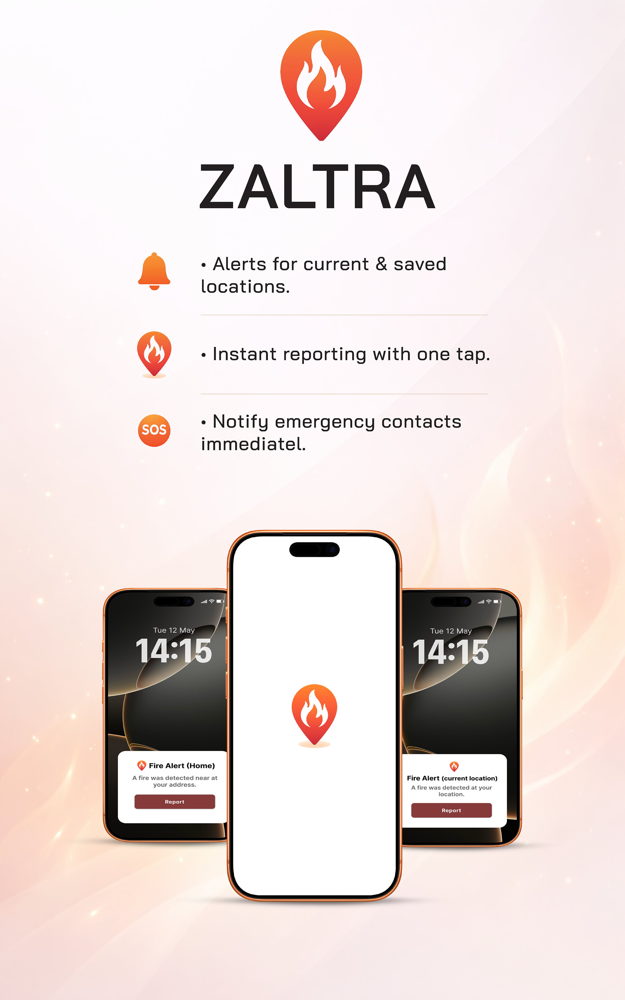
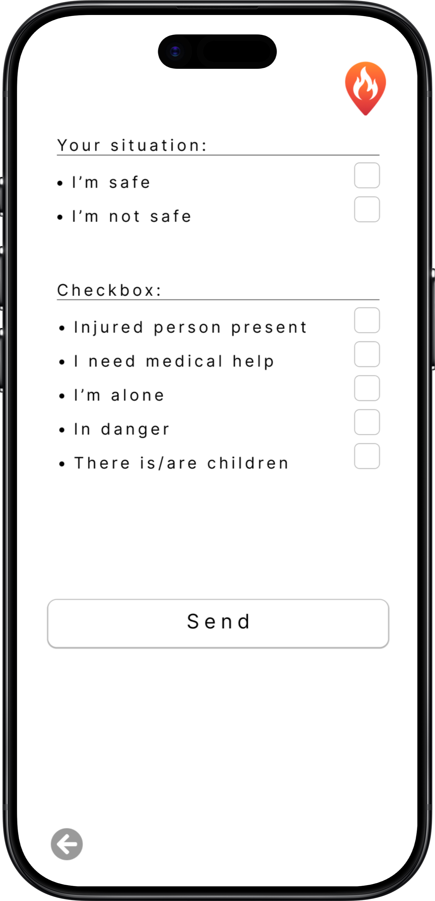

Zaltra is an emergency alert system designed to improve communication and response time during fire incidents. It provides real-time notifications for fires occurring both near the user’s current location and at their registered addresses. By combining user reports and satellite data, Zaltra detects fire events and instantly alerts users, guiding them to the application for detailed information.

Once alerted, the user is redirected to the app, where they can see the fire on a map, along with its distance, severity, and risk level. This allows users to quickly understand how dangerous the situation is.
The system visualises nearby fires on a map, clearly indicating their location and severity, allowing users to assess risk and distance quickly.

Zaltra is not just an alert system — it also enables action. With a single tap, users can:
Report a fire
Share their safety status
Send their exact location to emergency teams
At the same time, verified information is shared directly with fire departments, helping them respond faster and more accurately.